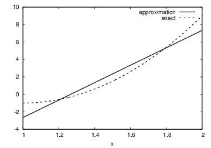
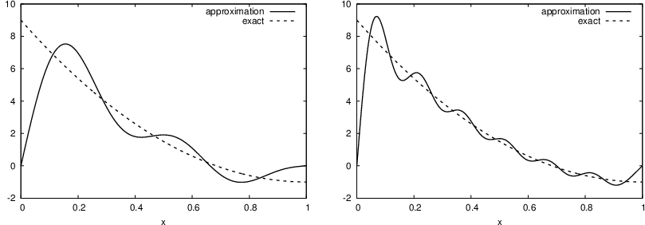
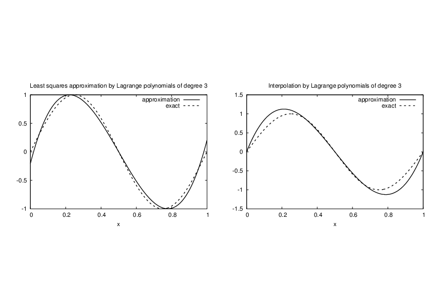
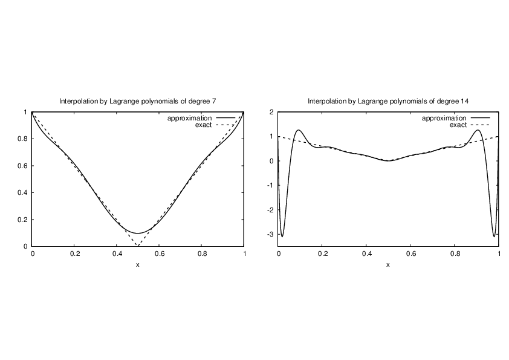
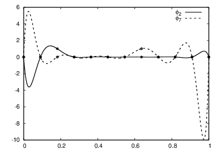
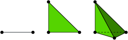

General idea of approximation:
$$ \begin{equation} u(x) = \sum_{i=0}^N c_i\basphi_i(x), \label{fem:u} \end{equation} $$ where
Given a two-dimensional vector \( \f = (3,5) \), find an approximation to \( \f \) directed along a given line.
Figure 3: Approximation of a two-dimensional vector by a one-dimensional vector.

In vector space terminology: given a vector in a two-dimensional vector space, find an approximation in a one-dimensional vector space
$$ \begin{equation} V = \mbox{span}\,\{ \phib_0\}\thinspace . \end{equation} $$
Detailed mathematics:
$$ \begin{equation} E(c_0) = (\e,\e) = (\f,\f) - 2c_0(\f,\phib_0) + c_0^2(\phib_0,\phib_0) \end{equation} $$
$$ \begin{equation} \frac{\partial E}{\partial c_0} = -2(\f,\phib_0) + 2c_0 (\phib_0,\phib_0) = 0 \thinspace . \label{fem:vec:dEdc0:v1} \end{equation} $$
$$ \begin{equation} c_0 = \frac{(\f,\phib_0)}{(\phib_0,\phib_0)}, \label{fem:vec:c0} \end{equation} $$
$$ \begin{equation} c_0 = \frac{3a + 5b}{a^2 + b^2}\thinspace . \end{equation} $$
For later, we note that setting \eqref{fem:vec:dEdc0:v1} to zero can be alternatively written as
$$ \begin{equation} (\e, \phib_0) = 0 \thinspace . \label{fem:vec:dEdc0:Galerkin} \end{equation} $$
Given some vector \( \f \), seek an approximation \( \u \) in a vector space \( V \) of dimension \( N+1 \):
$$ \begin{equation*} V = \hbox{span}\,\{\phib_0,\ldots,\phib_N\} \thinspace . \end{equation*} $$
Idea: find \( c_0,\ldots,c_N \) such that \( E= ||\e||^2 \) is minimized, \( \e=\f-\u \).
$$ \begin{align*} E(c_0,\ldots,c_N) &= (\e,\e) = (\f -\sum_jc_j\phib_j,\f -\sum_jc_j\phib_j) \nonumber\\ &= (\f,\f) - 2\sum_{j=0}^Nc_j(\f,\phib_j) + \sum_{p=0}^N\sum_{q=0}^N c_pc_q(\phib_p,\phib_q)\thinspace . \end{align*} $$
$$ \begin{equation*} \frac{\partial E}{\partial c_i} = 0,\quad i=0,\ldots,N \thinspace . \end{equation*} $$
After a bit tedious and technical work with sums, we get a linear system \( Ac=b \) or
$$ \sum_{j=0}^N A_{i,j}c_j = b_i,\quad i=0,\ldots,N, $$ where
$$ \begin{align} A_{i,j} &= (\phib_i,\phib_j),\\ b_i &= (\phib_i, \f)\thinspace . \end{align} $$
Can be shown that minimizing \( ||\e|| \) implies that \( \e \) is orthogonal to all \( \v\in V \):
$$ (\e,\v)=0,\quad \forall\v\in V, $$ which implies that \( \e \) most be orthogonal to each basis vector (see notes):
$$ \begin{equation} (\e,\phib_i)=0,\quad i=0,\ldots,N\thinspace . \label{fem:approx:vec:Np1dim:Galerkin0} \end{equation} $$
Inserting for \( \e \) and ordering terms gives the same linear system as that in the least squares method, implying that the methods are equivalent. However, the linear system will not be the same when apply these principles to solve PDEs.
Let \( V \) be a function space spanned by a set of basis functions \( \basphi_0,\ldots,\basphi_N \),
$$ \begin{equation*} V = \hbox{span}\,\{\basphi_0,\ldots,\basphi_N\},\end{equation*} $$
Any function \( u\in V \) can be written as a linear combination of the basis functions:
$$ \begin{equation} u = \sum_{j=0}^N c_j\basphi_j\thinspace . \label{fem:approx:ufem} \end{equation} $$ For now, we shall look at functions of a single variable \( x \): \( u=u(x) \), \( \basphi_i=\basphi_i(x) \), \( i=0,\ldots,N \). Easy go generalize.
Try to extend the ideas from the vector case: compute error and minimize error norm.
What norm?
$$ \begin{equation} (f,g) = \int_\Omega f(x)g(x)\, dx\thinspace . \end{equation} $$
Restrict attention to some domain \( \Omega \).
The error: \( e = f - u \).
The squared norm of the error:
$$ \begin{equation} E = (e,e) = (f-u,f-u) = (f(x)-\sum_{j=0}^Nc_j\basphi_j(x), f(x)-\sum_{j=0}^Nc_j\basphi_j(x)) \thinspace . \label{fem:approx:LS:E} \end{equation} $$
$$ \begin{equation} E(c_0,\ldots,c_N) = (f,f) -2\sum_{j=0}^N c_j(f,\basphi_i) + \sum_{p=0}^N\sum_{q=0}^N c_pc_q(\basphi_p,\basphi_q)\thinspace . \end{equation} $$
Minimizing \( E \) implies
$$ \begin{equation*} \frac{\partial E}{\partial c_i} = 0,\quad i=0,\ldots,N \thinspace . \end{equation*} $$
After computations identical to the vector case, we get a linear system
$$ \begin{equation} \sum_{j=0}^N A_{i,j}c_j = b_i,\quad i=0,\ldots,N, \label{fem:approx:vec:Np1dim:eqsys} \end{equation} $$ where
$$ \begin{align} A_{i,j} &= (\basphi_i,\basphi_j) \label{fem:approx:Aij}\\ b_i &= (f,\basphi_i)\thinspace . \label{fem:approx:bi} \end{align} $$
As before, minimizing \( (e,e) \) is equivalent to
$$ \begin{equation} (e,v)=0,\quad\forall v\in V, \label{fem:approx:Galerkin} \end{equation} $$ which means (as before)
$$ \begin{equation} (e,\basphi_i)=0,\quad i=0,\ldots,N\thinspace . \label{fem:approx:Galerkin0} \end{equation} $$
With the same algebra as in the multi-dimensional vector case, we get the same linear system as arose from the least squares method.
That is, the least squares and Galerkin/projection methods are again equivalent.
Problem: approximate a parabola by a straight line.
$$ \begin{equation*} V = \hbox{span}\,\{1, x\}\thinspace . \end{equation*} $$ That is, \( \basphi_0(x)=1 \), \( \basphi_1(x)=x \), and \( N=1 \). We seek
$$ \begin{equation*} u=c_0\basphi_0(x) + c_1\basphi_1(x) = c_0 + c_1x,\end{equation*} $$
$$ \begin{align} A_{0,0} &= (\basphi_0,\basphi_0) = \int_1^21\cdot 1\, dx = 1,\\ A_{0,1} &= (\basphi_0,\basphi_1) = \int_1^2 1\cdot x\, dx = 3/2,\\ A_{1,0} &= A_{0,1} = 3/2,\\ A_{1,1} &= (\basphi_1,\basphi_1) = \int_1^2 x\cdot x\,dx = 7/3\thinspace . \end{align} $$
$$ \begin{align} b_1 &= (f,\basphi_0) = \int_1^2 (10(x-1)^2 - 1)\cdot 1 \, dx = 7/3,\\ b_2 &= (f,\basphi_1) = \int_1^2 (10(x-1)^2 - 1)\cdot x\, dx = 13/3\thinspace . \end{align} $$ Solution of 2x2 linear system:
$$ \begin{equation} c_0 = -38/3,\quad c_1 = 10, \end{equation} $$
$$ \begin{equation} u(x) = 10x - \frac{38}{3}\thinspace . \end{equation} $$
Figure 4: Best approximation of a parabola by a straight line.

Consider symbolic computation of the linear system, where
import sympy as sm
def least_squares(f, phi, Omega):
N = len(phi) - 1
A = sm.zeros((N+1, N+1))
b = sm.zeros((N+1, 1))
x = sm.Symbol('x')
for i in range(N+1):
for j in range(i, N+1):
A[i,j] = sm.integrate(phi[i]*phi[j],
(x, Omega[0], Omega[1]))
A[j,i] = A[i,j]
b[i,0] = sm.integrate(phi[i]*f, (x, Omega[0], Omega[1]))
c = A.LUsolve(b)
u = 0
for i in range(len(phi)):
u += c[i,0]*phi[i]
return u
Observe: symmetric coefficient matrix.
Compare \( f \) and \( u \) visually:
def comparison_plot(f, u, Omega, filename='tmp.pdf'):
x = sm.Symbol('x')
f = sm.lambdify([x], f, modules="numpy")
u = sm.lambdify([x], u, modules="numpy")
resolution = 401 # no of points in plot
xcoor = linspace(Omega[0], Omega[1], resolution)
exact = f(xcoor)
approx = u(xcoor)
plot(xcoor, approx)
hold('on')
plot(xcoor, exact)
legend(['approximation', 'exact'])
savefig(filename)
What if we add \( \basphi_2=x^2 \) to the space \( V \)? That is, approximating a parabola by any parabola? (Hopefully we get the exact parabola!)
>>> from approx1D import *
>>> x = sm.Symbol('x')
>>> f = 10*(x-1)**2-1
>>> u = least_squares(f=f, phi=[1, x, x**2], Omega=[1, 2])
>>> print u
10*x**2 - 20*x + 9
>>> print sm.expand(f)
10*x**2 - 20*x + 9
Yes!
What if we use \( \phi_i(x)=x^i \) for \( i=0,\ldots,N=40 \)?
The output from least_squares is \( c_i=0 \) for \( i>2 \).
General result: if \( f\in V \), least squares and Galerkin/projection gives \( u=f \).
Proof: if \( f\in V \), \( f \) can be expanded in terms of the basis functions, \( f=\sum_{j=0}^Nd_j\basphi_j \), for some coefficients \( d_0,\ldots,d_N \), and the right-hand side then has entries
$$ \begin{equation*} b_i = (f,\basphi_i) = \sum_{j=0}^Nd_j(\basphi_j, \basphi_i) = \sum_{j=0}^Nd_jA_{i,j} \thinspace . \end{equation*} $$ The linear system \( \sum_jA_{i,j}c_j = b_i \), \( i=0,\ldots,N \), is then
$$ \begin{equation*} \sum_{j=0}^Nc_jA_{i,j} = \sum_{j=0}^Nd_jA_{i,j},\quad i=0,\ldots,N,\end{equation*} $$ which implies that \( c_i=d_i \) for \( i=0,\ldots,N \).
The previous computations were symbolic. What if we do numerical computing with numpy arrays?
| exact | sympy | numpy32 | numpy64 |
| 9 | 9.62 | 5.57 | 8.98 |
| -20 | -23.39 | -7.65 | -19.93 |
| 10 | 17.74 | -4.50 | 9.96 |
| 0 | -9.19 | 4.13 | -0.26 |
| 0 | 5.25 | 2.99 | 0.72 |
| 0 | 0.18 | -1.21 | -0.93 |
| 0 | -2.48 | -0.41 | 0.73 |
| 0 | 1.81 | -0.013 | -0.36 |
| 0 | -0.66 | 0.08 | 0.11 |
| 0 | 0.12 | 0.04 | -0.02 |
| 0 | -0.001 | -0.02 | 0.002 |
Figure 5: The 15 first basis functions \( x^i \), \( i=0,\ldots,14 \).

Almost linearly dependent basis functions give almost singular matrices. Such matrices are said to be ill conditioned, and Gaussian elimination is then prone to round-off errors.
The basis \( 1, x, x^2, x^3, x^4, \ldots \) is a bad basis. Polynomials are fine as basis, but more orthogonal they are, \( (\basphi_i,\basphi_j)\approx 0 \), the better.
Consider
$$ \begin{equation*} V = \hbox{span}\,\{ \sin \pi x, \sin 2\pi x,\ldots,\sin (N+1)\pi x\} \thinspace . \end{equation*} $$
$$ \begin{equation*} \basphi_i(x) = \sin ((i+1)\pi x),\quad i=0,\ldots,N\thinspace . \end{equation*} $$
N = 3
from sympy import sin, pi
phi = [sin(pi*(i+1)*x) for i in range(N+1)]
f = 10*(x-1)**2 - 1
Omega = [0, 1]
u = least_squares(f, phi, Omega)
comparison_plot(f, u, Omega)
Figure 6: Best approximation of a parabola by a sum of 3 (left) and 11 (right) sine functions.

Considerably improvement by \( N=11 \).
However, always discrepancy of \( f(0)-u(0)=9 \) at \( x=0 \), because all the \( \basphi_i(0)=0 \) and hence \( u(0)=0 \). Possible remedy:
$$ \begin{equation} u(x) = f(0)(1-x) + xf(1) + \sum_{j=0}^N c_j\basphi_j(x) \thinspace . \end{equation} $$ The extra term is a strikingly good help to get a good approximation.
Figure 7: Best approximation of a parabola by a sum of 3 (left) and 11 (right) sine functions with a boundary term.

This choice of sine functions as basis functions is popular because
$$ c_i = \frac{b_i}{A_{i,i}} = \frac{(f,\basphi_i)}{(\basphi_i,\basphi_i)} \thinspace . $$
Here is another idea: force \( u(\xno{i}) = f(\xno{i}) \) at some selected points \( \xno{i} \), \( i=0,\ldots,N \). Then \( u \) interpolates \( f \). Also known as the collocation method and \( \xno{i} \) as collocation points.
$$ \begin{equation} u(\xno{i}) = \sum_{j=0}^N c_j \basphi_j(\xno{i}) = f(\xno{i}),\quad i=0,\ldots,N\thinspace . \end{equation} $$
This is a linear system,
$$ \begin{equation} \sum_{j=0}^N A_{i,j}c_j = b_i,\quad i=0,\ldots,N, \end{equation} $$ with
$$ \begin{align} A_{i,j} &= \basphi_j(\xno{i}),\\ b_i &= f(\xno{i})\thinspace . \end{align} $$
No symmetric matrix: \( \basphi_j(\xno{i})\neq \basphi_i(\xno{j}) \) (in general).
With points as the collocation/interpolation points we can program the symbolic computations:
def interpolation(f, phi, points):
N = len(phi) - 1
A = sm.zeros((N+1, N+1))
b = sm.zeros((N+1, 1))
x = sm.Symbol('x')
# Turn phi and f into Python functions
phi = [sm.lambdify([x], phi[i]) for i in range(N+1)]
f = sm.lambdify([x], f)
for i in range(N+1):
for j in range(N+1):
A[i,j] = phi[j](points[i])
b[i,0] = f(points[i])
c = A.LUsolve(b)
u = 0
for i in range(len(phi)):
u += c[i,0]*phi[i](x)
return u
Features:
Figure 8: Approximation of a parabola by linear functions computed by two interpolation points: 4/3 and 5/3 (left) versus 1 and 2 (right).

Motivation:
$$ \begin{equation} u(x) = \sum_{j=0}^N f(\xno{i})\basphi_i(x)\thinspace . \end{equation} $$
Formula:
$$ \begin{equation} \basphi_i(x) = \prod_{j=0,j\neq i}^N \frac{x-\xno{j}}{\xno{i}-\xno{j}} = \frac{x-x_0}{\xno{i}-x_0}\cdots\frac{x-\xno{i-1}}{\xno{i}-\xno{i-1}}\frac{x-\xno{i+1}}{\xno{i}-\xno{i+1}} \cdots\frac{x-x_N}{\xno{i}-x_N}, \label{fem:approx:global:Lagrange:poly} \end{equation} $$
def Lagrange_polynomial(x, i, points):
p = 1
for k in range(len(points)):
if k != i:
p *= (x - points[k])/(points[i] - points[k])
return p
These basis functions are very much used in finite element methods.
Figure 9: Approximation via least squares (left) and interpolation (right) of a sine function by Lagrange interpolating polynomials of degree 4.

Figure 10: Interpolation of an absolute value function by Lagrange polynomials and uniformly distributed interpolation points: degree 7 (left) and 14 (right).

Figure 11: Illustration of the oscillatory behavior of two Lagrange polynomials for 12 uniformly spaced points (marked by circles).

Problem: strong oscillations near the boundaries for larger \( N \) values.
The oscillations can be reduced by a more clever choice of interpolation points, called the Chebyshev nodes:
$$ \begin{equation} \xno{i} = \half (a+b) + \half(b-a)\cos\left( \frac{2i+1}{2(N+1)}pi\right),\quad i=0\ldots,N, \end{equation} $$ on an interval \( [a,b] \).
Figure 12: Interpolation of an absolute value function by Lagrange polynomials and Chebyshev nodes as interpolation points: degree 7 (left) and 14 (right).

So far: basis functions have been global: \( \basphi_i(x) \neq 0 \) for most \( x\in\Omega \).

In the finite element method, basis functions are piecewise polynomials with local support (\( \basphi_i(x) \neq 0 \) for \( x \) in a small subdomain of \( \Omega \)), typically hat-like functions. This makes \( u=\sum_j c_j\basphi_j \) a polynomial over (small) subdomains.
Figure 14: Approximation based on local piecewise linear (hat) functions.

Split \( \Omega \) into non-overlapping subdomains called elements:
$$ \begin{equation} \Omega = \Omega^{(0)}\cup \cdots \cup \Omega^{(n_e)}\thinspace . \end{equation} $$
On each element, introduce points called nodes. Below: nodes at the end point of elements.
Figure 15: Vertical dashed lines mark element boundaries and nodes.

Figure 16: Illustration of the piecewise quadratic basis functions associated with nodes in element 1.

Figure 17: Illustration of the piecewise cubic basis functions associated with nodes in element 1.

Important property: \( c_i \) is the value of \( u \) at node \( i \), \( \xno{i} \):
$$ \begin{equation} u(\xno{i}) = \sum_{j=0}^N c_j\basphi_j(\xno{i}) = c_i\basphi_i(\xno{i}) = c_i \label{fem:approx:fe:phi:prop1} \thinspace . \end{equation} $$
\( \basphi_i(x) \) is mostly zero throughout the domain:
Figure 18: Finite element mesh: nodes are circles and vertical lines denote element boundaries (piecewise quadratic basis functions).
Introduce nodes and elements lists:
nodes = [0, 0.125, 0.25, 0.375, 0.5, 0.625, 0.75, 0.875, 1.0]
elements = [[0, 1, 2], [2, 3, 4], [4, 5, 6], [6, 7, 8]]
Figure 19: Illustration of the piecewise linear basis functions associated with nodes in element 1.

$$ \begin{equation} \basphi_i(x) = \left\lbrace\begin{array}{ll} 0, & x < \xno{i-1},\\ (x - \xno{i-1})/h, & \xno{i-1} \leq x < \xno{i},\\ 1 - (x - x_{i})/h, & \xno{i} \leq x < \xno{i+1},\\ 0, & x\geq \xno{i+1} \end{array} \right. \label{fem:approx:fe:phi:1:formula2} \end{equation} $$
Figure 20: Illustration of the piecewise cubic basis functions associated with nodes in element 1.
Assume uniform element length and P1 elements:
$$ \Omega^{(i)} = [\xno{i},\xno{i+1}] = [ih, (i+1)h],\quad i=0,\ldots,N-1$$
Figure 21: Piecewise linear basis functions \( \basphi_1 \) and \( \basphi_2 \).
$$ \begin{equation*} A_{i,i-1} = \int_\Omega \basphi_i\basphi_{i-1}dx = \int_{\xno{i-1}}^{\xno{i}} \left(1 - \frac{x - \xno{i-1}}{h}\right)\frac{x - x_{i}}{h} dx = \frac{h}{6}\thinspace . \end{equation*} $$
Can show that \( A_{i,i+1} =h/6 \), \( A_{i,i}=2h/3 \), but modifications at the boundary of \( \Omega \): \( A_{0,0}=h/3 \) and \( A_{N,N}=h/3 \).
$$ \begin{equation} b_i = \int_{\xno{i-1}}^{\xno{i}} \frac{x - \xno{i-1}}{h} f(x)dx + \int_{x_{i}}^{\xno{i+1}} \left(1 - \frac{x - x_{i}}{h}\right) f(x)dx\thinspace . \label{fem:approx:fe:bi:formula1} \end{equation} $$
With two equal-sized elements in \( \Omega=[0,1] \) and \( f(x)=x(1-x) \):
$$ \begin{equation*} A = \frac{h}{6}\left(\begin{array}{ccc} 2 & 1 & 0\\ 1 & 4 & 1\\ 0 & 1 & 2 \end{array}\right),\quad b = \frac{h^2}{12}\left(\begin{array}{c} 2 - 3h\\ 12 - 14h\\ 10 -17h \end{array}\right)\thinspace . \end{equation*} $$
$$ \begin{equation*} c_0 = \frac{h^2}{6},\quad c_1 = h - \frac{5}{6}h^2,\quad c_2 = 2h - \frac{23}{6}h^2\thinspace . \end{equation*} $$
$$ \begin{equation*} u(x)=c_0\basphi_0(x) + c_1\basphi_1(x) + c_2\basphi_2(x)\end{equation*} $$
Figure 22: Least squares approximation using 2 (left) and 4 (right) P1 elements.

Split the integral over \( \Omega \) into elementwise integrals: each element:
$$ \begin{equation} A_{i,j} = \int_\Omega\basphi_i\basphi_jdx = \sum_{e} A^{(e)}_{i,j},\quad A^{(e)}_{i,j}=\int_{\Omega^{(e)}} \basphi_i\basphi_jdx\thinspace . \label{fem:approx:fe:elementwise:Asplit} \end{equation} $$
Important:
$$ \tilde A^{(e)}_{r,s} = \int_{\Omega^{(e)}}\basphi_{q(e,r)}\basphi_{q(e,s)}dx,\quad r,s=0,\ldots,d. $$

Can also compute the right-hand side of the linear system from elementwise contributions:
$$ \begin{equation} b_i = \int_\Omega\basphi_i\basphi_jdx = \sum_{e} b^{(e)}_{i},\quad b^{(e)}_{i}=\int_{\Omega^{(e)}} f(x)\basphi_i(x)dx\thinspace . \end{equation} $$
Important:
Assembly:
$$ \begin{equation} b_{q(e,r)} := b_{q(e,r)} + \tilde b^{(e)}_{r},\quad r,s=0,\ldots,d\thinspace . \end{equation} $$
Instead of computing
$$ \begin{equation*} \tilde A^{(e)}_{r,s} = \int_{\Omega^{(e)}}\basphi_{q(e,r)}(x)\basphi_{q(e,s)}(x)dx\end{equation*} $$ over some element \( \Omega^{(e)} = [x_L, x_R] \), we now map \( [x_L, x_R] \) to a standardized reference element domain \( [-1,1] \) with local coordinate \( X \).
Affine mapping:
$$ \begin{equation} x = \half (x_L + x_R) + \half (x_R - x_L)X\thinspace . \label{fem:approx:fe:affine:mapping} \end{equation} $$ or rewritten as $$ \begin{equation} x = x_m + \frac{1}{2}hX, \qquad x_m=(x_L+x_R)/2 \label{fem:approx:fe:affine:mapping2} \end{equation} $$
Integrating on the reference element is a matter of just changing the integration variable from \( x \) to \( X \). Let
$$ \begin{equation} \refphi_r(X) = \basphi_{q(e,r)}(x(X)) \end{equation} $$ be the basis function associated with local node number \( r \) in the reference element. The integral transformation reads
$$ \begin{equation} \tilde A^{(e)}_{r,s} = \int_{\Omega^{(e)}}\basphi_{q(e,r)}(x)\basphi_{q(e,s)}(x)dx = \int_{-1}^1 \refphi_r(X)\refphi_s(X)\frac{dx}{dX}dX\thinspace . \end{equation} $$
Introduce the notation \( \det J = dx/dX = h/2 \), because in 2D and 3D we get \( \det J \) instead of \( dx/dX \).
$$ \begin{equation} \tilde A^{(e)}_{r,s} = \int_{-1}^1 \refphi_r(X)\refphi_s(X)\det J\,dX \label{fem:approx:fe:mapping:Ae} \thinspace . \end{equation} $$
$$ \begin{equation} \tilde b^{(e)}_{r} = \int_{\Omega^{(e)}}f(x)\basphi_{q(e,r)}(x)dx = \int_{-1}^1 f(x(X))\refphi_r(X)\det J\,dX \label{fem:approx:fe:mapping:be} \thinspace . \end{equation} $$
Advantages:
$$ \begin{align} \refphi_0(X) &= \half (1 - X) \label{fem:approx:fe:mapping:P1:phi0}\\ \refphi_1(X) &= \half (1 + X) \label{fem:approx:fe:mapping:P1:phi1} \end{align} $$
P2 elements:
$$ \begin{align} \refphi_0(X) &= \half (X-1)X\\ \refphi_1(X) &= 1 - X^2\\ \refphi_2(X) &= \half (X+1)X \end{align} $$
P1 elements and \( f(x)=x(1-x) \).
$$ \begin{align} \tilde A^{(e)}_{0,0} &= \int_{-1}^1 \refphi_0(X)\refphi_0(X)\frac{h}{2} dX\nonumber\\ &=\int_{-1}^1 \frac{1}{2}(1-X)\frac{1}{2}(1-X) \frac{h}{2} dX = \frac{h}{8}\int_{-1}^1 (1-X)^2 dX = \frac{h}{3},\\ \tilde A^{(e)}_{1,0} &= \int_{-1}^1 \refphi_1(X)\refphi_0(X)\frac{h}{2} dX\nonumber\\ &=\int_{-1}^1 \frac{1}{2}(1+X)\frac{1}{2}(1-X) \frac{h}{2} dX = \frac{h}{8}\int_{-1}^1 (1-X^2) dX = \frac{h}{6},\\ \tilde A^{(e)}_{0,1} &= \tilde A^{(e)}_{1,0},\\ \tilde A^{(e)}_{1,1} &= \int_{-1}^1 \refphi_1(X)\refphi_1(X)\frac{h}{2} dX\nonumber\\ &=\int_{-1}^1 \frac{1}{2}(1+X)\frac{1}{2}(1+X) \frac{h}{2} dX = \frac{h}{8}\int_{-1}^1 (1+X)^2 dX = \frac{h}{3} \thinspace . \end{align} $$
$$ \begin{align} \tilde b^{(e)}_{0} &= \int_{-1}^1 f(x(X))\refphi_0(X)\frac{h}{2} dX\nonumber\\ &= \int_{-1}^1 (x_m + \half hX)(1-(x_m + \half hX)) \frac{1}{2}(1-X)\frac{h}{2} dX \nonumber\\ &= - \frac{1}{24} h^{3} + \frac{1}{6} h^{2} x_{m} - \frac{1}{12} h^{2} - \frac{1}{2} h x_{m}^{2} + \frac{1}{2} h x_{m} \tilde b^{(e)}_{1}\\ &= \int_{-1}^1 f(x(X))\refphi_0(X)\frac{h}{2} dX\nonumber\\ &= \int_{-1}^1 (x_m + \half hX)(1-(x_m + \half hX)) \frac{1}{2}(1+X)\frac{h}{2} dX \nonumber\\ &= - \frac{1}{24} h^{3} - \frac{1}{6} h^{2} x_{m} + \frac{1}{12} h^{2} - \frac{1}{2} h x_{m}^{2} + \frac{1}{2} h x_{m} \thinspace . \end{align} $$ \( x_m \): element midpoint.
Tedious calculations! Let's use symbolic software:
>>> import sympy as sm
>>> x, x_m, h, X = sm.symbols('x x_m h X')
>>> sm.integrate(h/8*(1-X)**2, (X, -1, 1))
h/3
>>> sm.integrate(h/8*(1+X)*(1-X), (X, -1, 1))
h/6
>>> x = x_m + h/2*X
>>> b_0 = sm.integrate(h/4*x*(1-x)*(1-X), (X, -1, 1))
>>> print b_0
-h**3/24 + h**2*x_m/6 - h**2/12 - h*x_m**2/2 + h*x_m/2
Can printe out in LaTeX too (convenient for copying into reports):
>>> print sm.latex(b_0, mode='plain')
- \frac{1}{24} h^{3} + \frac{1}{6} h^{2} x_{m}
- \frac{1}{12} h^{2} - \frac{1}{2} h x_{m}^{2}
+ \frac{1}{2} h x_{m}
Compute \( \refphi_r(X) \) as a Lagrange polynomial of degree d:
import sympy as sm
import numpy as np
def phi_r(r, X, d):
if isinstance(X, sm.Symbol):
h = sm.Rational(1, d) # node spacing
nodes = [2*i*h - 1 for i in range(d+1)]
else:
# assume X is numeric: use floats for nodes
nodes = np.linspace(-1, 1, d+1)
return Lagrange_polynomial(X, r, nodes)
def Lagrange_polynomial(x, i, points):
p = 1
for k in range(len(points)):
if k != i:
p *= (x - points[k])/(points[i] - points[k])
return p
The complete basis:
def basis(d=1):
X = sm.Symbol('X')
phi = [phi_r(r, X, d) for r in range(d+1)]
return phi
Element matrix:
def element_matrix(phi, Omega_e, symbolic=True):
n = len(phi)
A_e = sm.zeros((n, n))
X = sm.Symbol('X')
if symbolic:
h = sm.Symbol('h')
else:
h = Omega_e[1] - Omega_e[0]
detJ = h/2 # dx/dX
for r in range(n):
for s in range(r, n):
A_e[r,s] = sm.integrate(phi[r]*phi[s]*detJ, (X, -1, 1))
A_e[s,r] = A_e[r,s]
return A_e
>>> from fe_approx1D import *
>>> phi = basis(d=1)
>>> phi
[1/2 - X/2, 1/2 + X/2]
>>> element_matrix(phi, Omega_e=[0.1, 0.2], symbolic=True)
[h/3, h/6]
[h/6, h/3]
>>> element_matrix(phi, Omega_e=[0.1, 0.2], symbolic=False)
[0.0333333333333333, 0.0166666666666667]
[0.0166666666666667, 0.0333333333333333]
Element vector:
def element_vector(f, phi, Omega_e, symbolic=True):
n = len(phi)
b_e = sm.zeros((n, 1))
# Make f a function of X
X = sm.Symbol('X')
if symbolic:
h = sm.Symbol('h')
else:
h = Omega_e[1] - Omega_e[0]
x = (Omega_e[0] + Omega_e[1])/2 + h/2*X # mapping
f = f.subs('x', x) # substitute mapping formula for x
detJ = h/2 # dx/dX
for r in range(n):
b_e[r] = sm.integrate(f*phi[r]*detJ, (X, -1, 1))
return b_e
Note: need to replace the symbol x in the expression for f by the mapping formula such that f contains the variable X.
Not all \( f(x) \) can be integrated by sympy so let us fall back on numerical integration:
def element_vector(f, phi, Omega_e, symbolic=True):
...
I = sm.integrate(f*phi[r]*detJ, (X, -1, 1))
if isinstance(I, sm.Integral):
h = Omega_e[1] - Omega_e[0] # Ensure h is numerical
detJ = h/2
integrand = sm.lambdify([X], f*phi[r]*detJ)
I = sm.mpmath.quad(integrand, [-1, 1])
b_e[r] = I
...
def assemble(nodes, elements, phi, f, symbolic=True):
n_n, n_e = len(nodes), len(elements)
zeros = sm.zeros if symbolic else np.zeros
A = zeros((n_n, n_n))
b = zeros((n_n, 1))
for e in range(n_e):
Omega_e = [nodes[elements[e][0]], nodes[elements[e][-1]]]
A_e = element_matrix(phi, Omega_e, symbolic)
b_e = element_vector(f, phi, Omega_e, symbolic)
for r in range(len(elements[e])):
for s in range(len(elements[e])):
A[elements[e][r],elements[e][s]] += A_e[r,s]
b[elements[e][r]] += b_e[r]
return A, b
Linear system solution:
if symbolic:
c = A.LUsolve(b) # sympy arrays, symbolic Gaussian elim.
else:
c = np.linalg.solve(A, b) # numpy arrays, numerical solve
>>> h, x = sm.symbols('h x')
>>> nodes = [0, h, 2*h]
>>> elements = [[0, 1], [1, 2]]
>>> phi = basis(d=1)
>>> f = x*(1-x)
>>> A, b = assemble(nodes, elements, phi, f, symbolic=True)
>>> A
[h/3, h/6, 0]
[h/6, 2*h/3, h/6]
[ 0, h/6, h/3]
>>> b
[ h**2/6 - h**3/12]
[ h**2 - 7*h**3/6]
[5*h**2/6 - 17*h**3/12]
>>> c = A.LUsolve(b)
>>> c
[ h**2/6]
[12*(7*h**2/12 - 35*h**3/72)/(7*h)]
[ 7*(4*h**2/7 - 23*h**3/21)/(2*h)]
Numerical computations:
>>> nodes = [0, 0.5, 1]
>>> elements = [[0, 1], [1, 2]]
>>> phi = basis(d=1)
>>> x = sm.Symbol('x')
>>> f = x*(1-x)
>>> A, b = assemble(nodes, elements, phi, f, symbolic=False)
>>> A
[ 0.166666666666667, 0.0833333333333333, 0]
[0.0833333333333333, 0.333333333333333, 0.0833333333333333]
[ 0, 0.0833333333333333, 0.166666666666667]
>>> b
[ 0.03125]
[0.104166666666667]
[ 0.03125]
>>> c = A.LUsolve(b)
>>> c
[0.0416666666666666]
[ 0.291666666666667]
[0.0416666666666666]
>>> d=1; n_e=8; Omega=[0,1] # 8 linear elements on [0,1]
>>> phi = basis(d)
>>> f = x*(1-x)
>>> nodes, elements = mesh_symbolic(n_e, d, Omega)
>>> A, b = assemble(nodes, elements, phi, f, symbolic=True)
>>> A
[h/3, h/6, 0, 0, 0, 0, 0, 0, 0]
[h/6, 2*h/3, h/6, 0, 0, 0, 0, 0, 0]
[ 0, h/6, 2*h/3, h/6, 0, 0, 0, 0, 0]
[ 0, 0, h/6, 2*h/3, h/6, 0, 0, 0, 0]
[ 0, 0, 0, h/6, 2*h/3, h/6, 0, 0, 0]
[ 0, 0, 0, 0, h/6, 2*h/3, h/6, 0, 0]
[ 0, 0, 0, 0, 0, h/6, 2*h/3, h/6, 0]
[ 0, 0, 0, 0, 0, 0, h/6, 2*h/3, h/6]
[ 0, 0, 0, 0, 0, 0, 0, h/6, h/3]
Note: do this by hand to understand what is going on!
The coefficient matrix is sparse (means mostly zeros):
$$ \begin{equation} A = \frac{h}{6} \left( \begin{array}{cccccccccc} 2 & 1 & 0 &\cdots & \cdots & \cdots & \cdots & \cdots & 0 \\ 1 & 4 & 1 & \ddots & & & & & \vdots \\ 0 & 1 & 4 & 1 & \ddots & & & & \vdots \\ \vdots & \ddots & & \ddots & \ddots & 0 & & & \vdots \\ \vdots & & \ddots & \ddots & \ddots & \ddots & \ddots & & \vdots \\ \vdots & & & 0 & 1 & 4 & 1 & \ddots & \vdots \\ \vdots & & & & \ddots & \ddots & \ddots &\ddots & 0 \\ \vdots & & & & &\ddots & 1 & 4 & 1 \\ 0 &\cdots & \cdots &\cdots & \cdots & \cdots & 0 & 1 & 2 \end{array} \right) \end{equation} $$
For P2 elements:
$$ \begin{equation} A = \frac{h}{30} \left( \begin{array}{ccccccccc} 4 & 2 & - 1 & 0 & 0 & 0 & 0 & 0 & 0\\ 2 & 16 & 2 & 0 & 0 & 0 & 0 & 0 & 0\\- 1 & 2 & 8 & 2 & - 1 & 0 & 0 & 0 & 0\\0 & 0 & 2 & 16 & 2 & 0 & 0 & 0 & 0\\0 & 0 & - 1 & 2 & 8 & 2 & - 1 & 0 & 0\\0 & 0 & 0 & 0 & 2 & 16 & 2 & 0 & 0\\0 & 0 & 0 & 0 & - 1 & 2 & 8 & 2 & - 1\\0 & 0 & 0 & 0 & 0 & 0 & 2 & 16 & 2\\0 & 0 & 0 & 0 & 0 & 0 & - 1 & 2 & 4 \end{array} \right) \end{equation} $$
Exploiting the sparse structure is important for efficient computations.
Figure 24: Matrix sparsity pattern for left-to-right numbering (left) and random numbering (right) of nodes in P1 elements.

Figure 25: Matrix sparsity pattern for left-to-right numbering (left) and random numbering (right) of nodes in P3 elements.

We have observed that \( \basphi_i\basphi_j\neq 0 \) only when \( i \) and \( j \) are nodes in the same element. This means that \( A_{i,j}=0 \) for most \( i \) and \( j \), and the coefficient matrix is then sparse.
Compute a mesh with n_e elements, basis functions of degree d, and approximate a given symbolic expression f by a finite element expansion \( u(x) = \sum_jc_j\basphi_j(x) \):
def approximate(f, symbolic=False, d=1, n_e=4, filename='tmp.pdf'):
Tests:
import sympy as sm
from fe_approx1D import approximate
x = sm.Symbol('x')
approximate(f=x*(1-x)**8, symbolic=False, d=1, n_e=4)
approximate(f=x*(1-x)**8, symbolic=False, d=2, n_e=2)
approximate(f=x*(1-x)**8, symbolic=False, d=1, n_e=8)
approximate(f=x*(1-x)**8, symbolic=False, d=2, n_e=4)
Figure 26: Comparison of the finite element approximations: 4 P1 elements with 5 nodes (upper left), 2 P2 elements with 5 nodes (upper right), 8 P1 elements with 9 nodes (lower left), and 4 P2 elements with 9 nodes (lower right).

Let \( \xno{i} \), \( i=0,\ldots,N \), be the nodes in the mesh. Collocation means
$$ \begin{equation} u(\xno{i})=f(\xno{i}),\quad i=0,\ldots,N, \end{equation} $$ which translates to
$$ \sum_{j=0}^N c_j \basphi_j(\xno{i}) = f(\xno{i}),$$ but \( \basphi_j(\xno{i})=0 \) if \( i\neq j \) so the sum collapses to one term \( c_i\basphi_i(\xno{i}) = c_i \), and we have the result
$$ \begin{equation} c_i = f(\xno{i}) \thinspace . \end{equation} $$
$$ \sum_{j=0}^N c_j (\basphi_i,\basphi_j) = (f,\basphi_i),\quad i=0,\ldots,N \thinspace . $$
The P1 finite element machinery results in a linear system where equation no \( i \) is
$$ \begin{equation} \frac{h}{6}(u_{i-1} + 4u_i + u_{i+1}) = (f,\basphi_i) \thinspace . \label{fem:deq:1D:approx:deq:massmat:diffeq2} \end{equation} $$
Note:
$$ \begin{equation} h(u_i - \frac{1}{6}(-u_{i-1} + 2u_i - u_{i+1})) \thinspace . \end{equation} $$ This looks like a finite difference approximation of
$$ h(u - \frac{h^2}{6}u''),$$ That is, the matrix arises from
$$ [h(u - \frac{h^2}{6}D_x D_x u]_i$$
The right-hand side is more complicated:
$$ (f,\basphi_i) = \int_{\xno{i-1}}^{\xno{i}} f(x)\frac{1}{h} (x - \xno{i-1}) dx + \int_{\xno{i}}^{\xno{i+1}} f(x)\frac{1}{h}(1 - (x - x_{i})) dx \thinspace . $$ Can't to much unless we specialize \( f \) or use numerical integration.
Apply the Trapezoidal rule using all the nodes:
$$ (f,\basphi_i) = \int_\Omega f\basphi_i dx\approx h\frac{1}{2}( f(\xno{0})\basphi_i(\xno{0}) + f(\xno{N})\basphi_i(\xno{N})) + h\sum_{j=1}^{N-1} f(\xno{j})\basphi_i(\xno{j}) \thinspace . $$ Since \( \basphi_i \) is zero at all these points, except at \( \xno{i} \), the Trapezoidal rule collapses to one term:
$$ \begin{equation} (f,\basphi_i) \approx hf(\xno{i}),\quad i=1,\ldots,N-1\thinspace. \end{equation} $$ This is the same result as in collocation (interpolation) and the finite difference method!
Simpson's rule:
$$ \int_\Omega f(x)dx \approx \frac{\tilde h}{3}\left( f(x_0) + 2\sum_{j=2,4,6,\ldots} f(x_j) + 4\sum_{j=1,3,5,\ldots} f(x_j) + f(x_{2N})\right), $$ Here \( f \) is sampled at midpoints and endpoints of the elements. The sums collapse because \( \basphi_i=0 \) at most of these points.
Result:
$$ \begin{equation} (f,\basphi_i) \approx \frac{h}{3}(f(\xno{i}-\frac{1}{2}h) + f(\xno{i}) + f(\xno{i}+\frac{1}{2}h) \thinspace . \end{equation} $$ In a finite difference context we would typically express this formula as
$$ \frac{h}{3}(f_{i-\frac{1}{2}} + f_i + f_{i+\frac{1}{2}}) \thinspace . $$
Conclusions:
$$ \begin{equation} u + \frac{h^2}{6} u'' = f,\quad u'(0)=u'(L)=0, \end{equation} $$ expressed with operator notation as
$$ \begin{equation} [u + \frac{h^2}{6} D_x D_x u = f]_i\thinspace . \end{equation} $$
With Simpson integration of \( (f,\basphi_i) \) we essentially solve
$$ \begin{equation} [u + \frac{h^2}{6} D_x D_x u = \bar f]_i, \end{equation} $$ where $$ \bar f_i = \frac{1}{3}(f_{i-1/2} + f_i + f_{i+1/2}) $$
Note:
So far,
vertices = [0, 0.4, 1]
cells = [[0, 1], [1, 2]]
dof_map = [[0, 1, 2], [1, 2, 3]]
Example: \( u \) is piecewise constant in each cell (P0 element). Same vertices and cells, but
dof_map = [[0], [1], [2]]
May think of nodes in the middle of each element.
The assembly process must now use the dof_map (no elements data structure anymore):
A[dof_map[e][r], dof_map[e][s]] += A_e[r,s]
b[dof_map[e][r]] += b_e[r]
We will hereafter work with cells, vertices, and dof_map.
$$ \begin{align} \refphi_0(X) &= 1 - \frac{3}{4}(X+1)^2 + \frac{1}{4}(X+1)^3\\ \refphi_1(X) &= -(X+1)(1 - \frac{1}{2}(X+1))^2\\ \refphi_2(X) &= \frac{3}{4}(X+1)^2 - \frac{1}{2}(X+1)^3\\ \refphi_3(X) &= -\frac{1}{2}(X+1)(\frac{1}{2}(X+1)^2 - (X+1))\\ \end{align} $$
\( \int_\Omega f\basphi_idx \) must in general be computed by numerical integration.
Common form:
$$ \begin{equation} \int_{-1}^{1} g(X)dX \approx \sum_{j=0}^M w_j\bar X_j, \end{equation} $$ where
$$ \begin{equation} \int_{-1}^{1} g(X)dX \approx 2g(0),\quad \bar X_0=0,\ w_0=2, \end{equation} $$
Idea: use a fixed, uniformly distributed set of points. The points usually coincides with nodes (in higher-order elements). Very useful for making \( \basphi_i\basphi_j=0 \) and get diagonal (mass) matrices ("lumping").
The Trapezoidal rule:
$$ \begin{equation} \int_{-1}^{1} g(X)dX \approx g(-1) + g(1),\quad \bar X_0=-1,\ \bar X_1=1,\ w_0=w_1=1, \label{fem:approx:fe:numint1:trapez} \end{equation} $$
Simpson's rule:
$$ \begin{equation} \int_{-1}^{1} g(X)dX \approx \frac{1}{3}\left(g(-1) + 4g(0) + g(1)\right), \end{equation} $$ where
$$ \begin{equation} \bar X_0=-1,\ \bar X_1=0,\ \bar X_2=1,\ w_0=w_2=\frac{1}{3},\ w_1=\frac{4}{3}\thinspace . \end{equation} $$
All the concepts and algorithms developed for approximation of 1D functions \( f(x) \) can readily be extended to 2D functions \( f(x,y) \) and 3D functions \( f(x,y,z) \). Key formulas stay the same.
Inner product in 2D:
$$ \begin{equation} (f,g) = \int_\Omega f(x,y)g(x,y) dx dy \end{equation} $$
Given 1D basis functions
$$ \{ \hat\basphi_0(x),\ldots,\hat\basphi_{N_x}(x)\}, $$ we can combine these two form 2D basis functions: \( \hat\basphi_p(x)\hat\basphi_q(y) \) (tensor-product definition).
Either double index \( (p,q) \),
$$ u = \sum_{p=0}^{N_y}\sum_{q=0}^{N_x} c_{p,q}\basphi_{p,q}(x,y), \quad \basphi_{p,q}(x,y) = \hat\basphi_p(x)\hat\basphi_q(y), $$ or we may transform the double index \( (p,q) \) to a single index \( i \), using \( i=pN_y + q \) or \( i=qN_x + p \).
Simple example:
$$ \{ 1, x \} $$
$$ \basphi_{0,0}=1,\quad \basphi_{1,0}=x, \quad \basphi_{0,1}=y, \quad \basphi_{1,1}=xy, $$ or with a single index:
$$ \basphi_0=1,\quad \basphi_1=x, \quad \basphi_2=y,\quad\basphi_3 =xy \thinspace . $$
See notes for details of a hand-calculation.
Figure 27: Approximation of a 2D quadratic function (left) by a 2D bilinear function (right) using the Galerkin or least squares method.

The two great advantages of the finite element method:

Figure 29: Examples on 2D P1 elements in a deformed geometry.


The P1 triangular 2D element: \( u \) is linear \( ax + by + c \) over each triangular cell.
Figure 31: Example on piecewise linear 2D functions defined on triangles.

Figure 32: Example on a piecewise linear 2D basis function over a patch of triangles.

\( \basphi_i\basphi_j\neq 0 \) only if \( i \) and \( j \) are degrees of freedom (vertices/nodes) in the same element. Element matrix: \( 3\times 3 \).

$$ \begin{align} \refphi_0(X,Y) &= 1 - X - Y,\\ \refphi_1(X,Y) &= X,\\ \refphi_2(X,Y) &= Y \end{align} $$
Higher-order elements introduce more nodes. Degrees of freedom are the function values at the nodes.
Higher-order means higher-degree polynomials.




Mapping of local \( (X,Y) \) coordinates in the reference cell to global, physical \( (x,y) \) coordinates:
$$ \begin{equation} \x = \sum_{r} \refphi_r^{(1)}(\X)\xdno{q(e,r)}, \label{fem:approx:fe:affine:map} \end{equation} $$ where

Idea: Use the basis functions of the element to map the element
$$ \begin{equation} \x = \sum_{r} \refphi_r(\X)\xdno{q(e,r)}, \label{fem:approx:fe:isop:map} \end{equation} $$ Advantage: higher-order polynomial basis functions now maps the reference cell to a curved triangle or tetrahedron.

Abstract differential equation: $$ \begin{equation} {\cal L}(u) = 0,\quad x\in\Omega\thinspace . \end{equation} $$
Examples:
$$ \begin{align} {\cal L}(u) &= \frac{d^2u}{dx^2} - f(x), \label{fem:deq:1D:L1}\\ {\cal L}(u) &= \frac{d}{dx}\left(a(x)\frac{du}{dx}\right) + f(x), \label{fem:deq:1D:L2}\\ {\cal L}(u) &= \frac{d}{dx}\left(a(u)\frac{du}{dx}\right) - \alpha u + f(x), \label{fem:deq:1D:L3}\\ {\cal L}(u) &= \frac{d}{dx}\left(a(u)\frac{du}{dx}\right) + f(u,x) \label{fem:deq:1D:L4} \thinspace . \end{align} $$
$$ \begin{equation} {\cal B}_0(u)=0,\ x=0,\quad {\cal B}_1(u)=0,\ x=L \end{equation} $$
There are three common choices of boundary conditions: $$ \begin{align} {\cal B}_i(u) &= u - g,\quad \hbox{(Dirichlet condition)},\\ {\cal B}_i(u) &= -a \frac{du}{dx} - g,\quad \hbox{(Neumann condition)},\\ {\cal B}_i(u) &= -a \frac{du}{dx} - a(u-g),\quad \hbox{(Robin condition)} \thinspace . \end{align} $$
From now on we shall use \( \uex(x) \) as symbol for the exact solution, fulfilling
$$ \begin{equation} {\cal L}(\uex)=0,\quad x\in\Omega, \end{equation} $$ while \( u(x) \) denotes an approximate solution of the differential equation.
The fundamental idea is to seek an approximate solution \( u \) in some space \( V \) with basis
$$ \begin{equation*} \{ \basphi_0(x),\ldots,\basphi_N(x)\},\end{equation*} $$ which means that \( u \) can always be expressed as
$$ \begin{equation*} u(x) = \sum_{j=0}^N c_j\basphi_j(x),\end{equation*} $$ for some unknown coefficients \( c_0,\ldots,c_N \).
Inserting this \( u \) in the equation gives a nonzero residual \( R \):
$$ \begin{equation} R = {\cal L}(u) = {\cal L}(\sum_j c_j \basphi_j), \end{equation} $$
Idea: minimize
$$ \begin{equation} \int_{\Omega} R^2 dx \end{equation} $$
With the inner product
$$ \begin{equation} (f,g) = \int_{\Omega} f(x)g(x) dx, \end{equation} $$
the least-squares method can be defined as
$$ \begin{equation} \min_{c_0,\ldots,c_N} E = (R,R)\thinspace . \end{equation} $$ Differentiating with respect to the free parameters \( c_0,\ldots,c_N \) gives the \( N+1 \) equations
$$ \begin{equation} \int_{\Omega} 2R\frac{\partial R}{\partial c_i} dx = 0\quad \Leftrightarrow\quad (R,\frac{\partial R}{\partial c_i})=0,\quad i=0,\ldots,N\thinspace . \label{fem:deq:1D:LS:eq1} \end{equation} $$
Idea: make \( R \) orthogonal to \( V \),
$$ \begin{equation} (R,v)=0,\quad \forall v\in V\thinspace . \label{fem:deq:1D:Galerkin0} \end{equation} $$
Equivalent statement:
$$ \begin{equation} (R,\basphi_i)=0,\quad i=0,\ldots,N, \label{fem:deq:1D:Galerkin} \end{equation} $$ This statement generates \( N+1 \) equations for \( c_0,\ldots,c_N \).
Generalization of the Galerkin method: demand \( R \) orthogonal to some space \( W \), possibly \( W\neq V \):
$$ \begin{equation} (R,v)=0,\quad \forall v\in W\thinspace . \label{fem:deq:1D:WRM0} \end{equation} $$ If \( \{w_0,\ldots,w_N\} \) is a basis for \( W \), we can equivalently express the method of weighted residuals as
$$ \begin{equation} (R,w_i)=0,\quad i=0,\ldots,N\thinspace . \label{fem:deq:1D:WRM} \end{equation} $$ This gives \( N+1 \) equations for \( c_0,\ldots,c_N \).
Note: The least-squares method can also be viewed as a weighted residual method with \( w_i = \partial R/\partial c_i \).
Idea: demand \( R=0 \) at \( N+1 \) points.
$$ \begin{equation} R(\xno{i}; c_0,\ldots,c_N)=0,\quad i=0,\ldots,N\thinspace . \label{fem:deq:1D:collocation} \end{equation} $$
Note: The collocation method is a weighted residual method with delta functions as weights.
$$ \begin{equation} \int_{\Omega} f(x)\delta (x-\xno{i}) dx = f(\xno{i}),\quad \xno{i}\in\Omega\thinspace . \label{fem:deq:1D:Dirac} \end{equation} $$
Figure 40: Approximation of delta functions by narrow Gaussian functions.

$$ \begin{equation} -u''(x) = f(x),\quad x\in\Omega=[0,L],\quad u(0)=0,\ u(L)=0 \thinspace . \label{fem:deq:1D:model1} \end{equation} $$
$$ \begin{equation} \basphi_i(x) = \sinL{i},\quad i=0,\ldots,N\thinspace . \label{fem:deq:1D:ex:sines:phi} \end{equation} $$
Note: \( \basphi_i(0)=\basphi_i(L)=0 \), which ensures that \( u \) fulfills the boundary conditions:
$$ u(0) = \sum_jc_j\basphi_j(0) = 0,\quad u(L) = \sum_jc_j\basphi_j(L) \thinspace .$$
Another useful property is the orthogonality on \( \Omega \):
$$ \begin{equation} \int\limits_0^L \sinL{i}\sinL{j}\, dx = \left\lbrace \begin{array}{ll} \half L & i=j \\ 0, & i\neq j \end{array}\right. \end{equation} $$
That is, the coefficient matrix becomes diagonal (\( \basphi_i\basphi_j=0 \)).
$$ \begin{align} R(x;c_0,\ldots,c_N) &= u''(x) + f(x),\nonumber\\ &= \frac{d^2}{dx^2}\left(\sum_{j=0}^N c_j\basphi_j(x)\right) + f(x),\nonumber\\ &= -\sum_{j=0}^N c_j\basphi_j''(x) + f(x)\thinspace . \label{fem:deq:1D:ex:sines:res} \end{align} $$
$$ (R,\frac{\partial R}{\partial c_i}) = 0,\quad i=0,\ldots,N\thinspace . $$
We need an expression for \( \partial R/\partial c_i \):
$$ \begin{equation} \frac{\partial R}{\partial c_i} = \frac{\partial}{\partial c_i} \left(\sum_{j=0}^N c_j\basphi_j''(x) + f(x)\right) = \basphi_i''(x)\thinspace . \end{equation} $$ Because: $$ \frac{\partial}{\partial c_i}\left(c_0\basphi_0'' + c_1\basphi_1'' + \cdots + c_{i-1}\basphi_{i-1}'' + c_i\basphi_{i}'' + c_{i+1}\basphi_{i+1}'' + \cdots + c_N\basphi_N'' \right) = \basphi_{i}'' $$
The governing equations for \( c_0,\ldots,c_N \) are then
$$ \begin{equation} (\sum_j c_j \basphi_j'' + f,\basphi_i'')=0,\quad i=0,\ldots,N, \end{equation} $$ which can be rearranged as
$$ \begin{equation} \sum_{j=0}^N(\basphi_i'',\basphi_j'')c_j = -(f,\basphi_i''),\quad i=0,\ldots,N\thinspace . \end{equation} $$ This is nothing but a linear system
$$ \begin{equation*} \sum_{j=0}^NA_{i,j}c_j = b_i,\quad i=0,\ldots,N, \end{equation*} $$ with
$$ \begin{align} A_{i,j} &= (\basphi_i'',\basphi_j'')\nonumber\\ & = \pi^4(i+1)^2(j+1)^2L^{-4}\int_0^L \sinL{i}\sinL{j}\, dx\nonumber\\ &= \left\lbrace \begin{array}{ll} {1\over2}L^{-3}\pi^4(i+1)^4 & i=j \\ 0, & i\neq j \end{array}\right. \\ b_i &= -(f,\basphi_i'') = (i+1)^2\pi^2L^{-2}\int_0^Lf(x)\sinL{i}\, dx \end{align} $$ Since the coefficient matrix is diagonal we can easily solve for
$$ \begin{equation} c_i = \frac{2L}{\pi^2(i+1)^2}\int_0^Lf(x)\sinL{i}\, dx\thinspace . \label{fem:deq:1D:ex:sines:solution} \end{equation} $$ With the special choice of \( f(x)=2 \) the integral becomes
$$ \begin{equation*} \frac{L\cos(\pi i) + L}{\pi (i+1)},\end{equation*} $$
The solution becomes:
$$ \begin{equation} u(x) = \sum_{k=0}^{N/2} \frac{8L^2}{\pi^3(2k+1)^3}\sinL{2k}\thinspace . \end{equation} $$
The coefficients decay very fast: \( c_2 = c_0/27 \), \( c_4=c_0/125 \). The first term therefore suffices:
$$ \begin{equation*} u(x) \approx \frac{8L^2}{\pi^3}\sin\left(\pi\frac{x}{L}\right)\thinspace . \end{equation*} $$
$$ \begin{equation*} (u''+f,v)=0,\quad \forall v\in V, \end{equation*} $$ or
$$ \begin{equation} (u'',v) = -(f,v),\quad\forall v\in V\thinspace . \end{equation} $$
This is called a variational formulation.
\( \forall v\in V \) means for all basis functions:
$$ \begin{equation} (\sum_{j=0}^N c_j\basphi_j'', \basphi_i)=-(f,\basphi_i),\quad i=0,\ldots,N\thinspace . \end{equation} $$
For the particular choice of the sine basis functions, we get in fact the same linear system as in the least squares method (because \( \basphi''= -(i+1)^2\pi^2L^{-2}\basphi \)).
Residual must vanish at selected points, or equivalently, the differential equation with approximation \( u \) inserted, must be fulfilled at selected points:
$$ \begin{equation} -\sum_{j=0}^N c_j\basphi_j''(\xno{i}) = f(\xno{i}),\quad i=0,\ldots,N \thinspace . \end{equation} $$ This is a linear system with entries
$$ \begin{equation*} A_{i,j}=-\basphi_j''(\xno{i})= (j+1)^2\pi^2L^{-2}\sin\left((j+1)\pi \frac{x_i}{L}\right),\end{equation*} $$ and \( b_i=2 \).
Special case: \( N=0 \), \( x_0=L/2 \) $$ c_0=2L^2/\pi^2 $$
$$ \begin{align} \int_0^L u''(x)v(x) dx &= - \int_0^Lu'(x)v'(x)dx + [vu']_0^L\nonumber\\ &= - \int_0^Lu'(x)v'(x) dx + u'(L)v(L) - u'(0)v(0)\thinspace . \label{fem:deq:1D:intbyparts} \end{align} $$
Recall that \( v(0)=v(L)=0 \), i.e., \( \basphi_i(0)=\basphi_i(L)=0 \) because we demand so where we have Dirichlet conditions.
Advantageous features of integration by parts:
\( u(0)=0 \) and \( u(L)=D \). Choose
$$ B(x) = \frac{D}{L}x:\qquad B(0)=0,\ B(L)=D \thinspace .$$
$$ \begin{equation} u(x) = \frac{x}{L}D + \sum_{j=0}^N c_j\basphi_j(x), \label{fem:deq:1D:essBC:Bfunc:u1} \end{equation} $$
$$ u(0) = 0,\quad u(L) = 0\thinspace . $$
The finite element literature (and much FEniCS documentation) applies an abstract notation for the variational formulation: *Find \( u-B\in V \) such that $$ a(u,v) = L(v)\quad \forall v\in V\thinspace .$$
Given a variational formulation for \( -u''=f \):
$$ \int_{\Omega} u' v'dx = \int_{\Omega} fvdx\quad\hbox{or}\quad (u',v') = (f,v) \quad\forall v\in V$$ we identify
$$ a(u,v) = (u',v'),\quad L(v) = (f,v)\thinspace . $$
Then we can write $$ a(u,v) = L(v)\quad \forall v\in V,$$ if
\( a(u,v) \) is a bilinear form and \( L(v) \) is a linear form.
Linearity: $$ L(\alpha_1 v_1 + \alpha_2 v_2) =\alpha_1 L(v_1) + \alpha_2 L(v_2)$$ $$ a(\alpha_1 u_1 + \alpha_2 u_2, v) = \alpha_1 u(u_1,v) + \alpha_2 a(u_2, v), \quad a(u, \alpha_1 v_1 + \alpha_2 v_2) = \alpha_1 u(u,v_1) + \alpha_2 a(u, v_2) \thinspace . $$
In nonlinear problems the abstract form is \( F(u;v)=0 \) $\forall v\in V$.
The abstract form \( a(u,v)=L(v) \) is equivalent with a linear system
$$ \sum_{j=0}^N A_{i,j}c_j=b_i,\quad i=0,\ldots,N$$ with $$ \begin{align*} A_{i,j} &= a(\basphi_j,\basphi_i),\\ b_i &= L(\basphi_i) \thinspace . \end{align*} $$
Consider the problem
$$ \begin{equation} -\frac{d}{dx}\left( a(x)\frac{du}{dx}\right) = f(x),\quad x\in\Omega =[0,L],\ u(0)=C,\ u(L)=D\thinspace . \end{equation} $$
Two new features:
$$ u(x) = B(x) + \sum_{j=0}^N c_j\basphi_i(x),\quad \basphi_i(0)=\basphi_i(L)=0 $$
One possible choice of \( B \) is:
$$ B(x) = C + \frac{1}{L}(D-C)x \thinspace . $$
The residual:
$$ R = -\frac{d}{dx}\left( a\frac{du}{dx}\right) -f\thinspace .$$
Galerkin's method:
$$ (R, v) = 0,\quad \forall v\in V, $$
Written in terms of integrals:
$$ \int_{\Omega} \left(\frac{d}{dx}\left( a\frac{du}{dx}\right) -f\right)v dx = 0,\quad \forall v\in V \thinspace . $$
Integration by parts:
$$ -\int_{\Omega} \frac{d}{dx}\left( a(x)\frac{du}{dx}\right) vdx = \int_{\Omega} a(x)\frac{du}{dx}\frac{dv}{dx}dx - \left[a\frac{du}{dx}v\right]_0^L \thinspace . $$ Must have \( v=0 \) where we have Dirichlet conditions: boundary terms vanish.
The final variational formulation:
$$ \int_{\Omega} a(x)\frac{du}{dx}\frac{dv}{dx}dx = \int_{\Omega} f(x)vdx,\quad \forall v\in V, $$
Can alternatively express this imore compactly as
$$ (a u',v') = (f,v),\quad \forall v\in V \thinspace . $$
The abstract notation is
$$ a(u,v)=L(v)\quad\forall v\in V,$$ with $$ a(u,v)= (au',v'),\quad L(v)=(f,v) \thinspace . $$ Do not mix the \( a \) in \( a(\cdot,\cdot) \) (notation) and \( a(x) \) (function name).
Can derive linear system by inserting \( u=B + \sum_jc_j\basphi_j \) and \( v=\basphi_i \):
$$ \sum_{j=0}^N (a\basphi_j', \basphi_i)c_j = (f,\basphi_i) + (CL^{-1},\basphi_i'), \quad i=0,\ldots,N, $$ or \( \sum_j A_{i,j}c_j=b_i \) with
$$ \begin{align*} A_{i,j} &= (a\basphi_j', \basphi_i) = \int_{\Omega} a(x)\basphi_j'(x), \basphi_i(x)dx,\\ b_i &= (f,\basphi_i) + (CL^{-1},\basphi_i')= \int_{\Omega} \left(f(x)\basphi_i(x) + \frac{C}{L}\basphi_i'(x)\right)dx \thinspace . \end{align*} $$
Model:
$$ \begin{equation} -u''(x) + bu'(x) = f(x),\quad x\in\Omega =[0,L],\ u(0)=C,\ u'(L)=E\thinspace . \end{equation} $$
New features:
Galerkin's method: multiply by \( v \), integrate over \( \Omega \), integrate by parts.
$$ (-u'' + bu' - f, v) = 0,\quad\forall v\in V$$
$$ (u' + bu',v') = (f,v) + [u' v]_0^L, \quad\forall v\in V \thinspace .$$
$$ (u' + bu',v') = (f,v) + Ev(L), \quad\forall v\in V,$$ because \( [u' v]_0^L = u'(L)v(L) = E v(L) \) because \( v(0)=0 \) and \( u'(L)=E \).
Important:
$$ a(u,v)=L(v)\quad\forall v\in V,$$ with the particular formulas $$ a(u,v)=(u',v') + (bu',v),\quad L(v)= (f+C,v) + E v(L)\thinspace .$$
Linear system: insert \( u=B+\sum_jc_j\basphi_j \) and \( v=\basphi_i \),
$$ \sum_{j=0}^N \underbrace{((\basphi_j',\basphi_i') + (b\basphi_j',\basphi_i))}_{A_{i,j}} c_j = \underbrace{(f,\basphi_i) + (C/L,\basphi_i') + E \basphi_i(L)}_{b_i} \thinspace . $$
Observation: \( A_{i,j} \) is not symmetric because of the term
$$ (b\basphi_j',\basphi_i)=\int_{\Omega} b\basphi_j'\basphi_i dx \neq \int_{\Omega} b \basphi_i' \basphi_jdx = (\basphi_i',b\basphi_j) \thinspace . $$
Let us solve
$$ \begin{equation*} -u''(x)=f(x),\quad x\in \Omega=[0,1],\quad u'(0)=C,\ u(1)=D,\end{equation*} $$
$$ \begin{align*} A_{i,j} &= (\basphi_j,\basphi_i) = \int_{0}^1 \basphi_i'(x)\basphi_j'(x)dx = \int_0^1 (i+1)(j+1)(1-x)^{i+j}dx,\\ b_i &= (2,\basphi_i) - (D,\basphi_i') -C\basphi_i(0) = \int_{0^1\left( 2\basphi_i(x) - D\basphi_i'(x)\right)dx -C\basphi_i(0) = \int_0^1 \left( 2(1-x)^{i+1} - D(i+1)(1-x)^i\right)dx -C\basphi_i(0) \end{align*} $$
With \( N=1 \):
$$ \begin{equation*} \left(\begin{array}{cc} 1 & 1\\ 1 & 4/3 \end{array}\right) \left(\begin{array}{c} c_0\\ c_1 \end{array}\right) = \left(\begin{array}{c} -C+D+1\\ 2/3 -C + D \end{array}\right) \end{equation*} $$
$$ c_0=-C+D+2, \quad c_1=-1,$$
$$ u(x) = 1 -x^2 + D + C(x-1) \thinspace . $$ This is also the exact solution (as expected when \( V \) contains second-degree polynomials).
If \( a(u,v)=a(v,u) \), it can be shown that the variational statement \( a(u,v)=L(v) \) $\forall v\in V$ is equivalent to minimizing the functional
$$ F(v) = \frac{1}{2}a(v,v) - L(v) $$ That is, find \( u \) such that
$$ F(u)\leq F(v)\quad\forall v\in V\thinspace .$$
Traditional use of finite elements often starts with \( F(v) \) and then derives \( a(u,v)=L(v) \).
The techniques used to derive variational forms also apply in nonlinear cases.
Consider $$ \begin{equation} -(a(u)u')' = f(u),\quad x\in [0,L],\ u(0)=0,\ u'(L)=E \thinspace . \end{equation} $$
Using the Galerkin principle, we multiply by \( v\in V \) and integrate,
$$ -\int_0^L \frac{d}{dx}\left(a(u)\frac{du}{dx}\right)vdx = \int_0^L f(u)vdx\quad\forall v\in V \thinspace . $$ Integration by parts is not affected by \( a(u) \):
$$ \int_0^L a(u)\frac{du}{dx}\frac{dv}{dx}vdx = \int_0^L f(u)vdx + [vu']_0^L\quad\forall v\in V \thinspace . $$ \( v(0)=0 \) since \( u(0) \) is known. \( v(L)u'(L)=v(L)E \).
$$ (a(u)u', v') = (f(u),v) + vE\quad\forall v\in V \thinspace . $$
Since the problem is nonlinear, we cannot identify \( a(u,v) \) and \( L(v) \). An abstract notation is typically find \( u \) such that
$$ F(u;v) = 0\quad\forall v\in V,$$ with $$ F(u;v) = (a(u)u', v') - (f(u),v) - vE \thinspace . $$
By inserting \( u=\sum_j c_j\basphi_j \) we get a nonlinear system of algebraic equations for the unknowns \( c_0,\ldots,c_N \). Such systems must be solved by constructing a sequence of linear systems whose solutions converge to the solution of the nonlinear system. Frequently applied methods are Picard iteration and Newton's method.
The purpose of this section is to demonstrate in detail how the finite method can the be applied to the model problem
$$ -u''(x) = 2,\quad x\in (0,L),\ u(0)=u(L)=0,$$ with variational formulation
$$ (u',v') = (2,v)\quad\forall v\in V\thinspace . $$
Exclude \( c_0 \) and \( c_N \) from the unknowns since we know \( c_0=c_N=0 \):
Since \( u \) is known to be zero at the end points of the interval, we can utilize a sum over the basis functions associated with internal nodes only:
$$ \begin{equation*} u(x) = \sum_{j=1}^{N-1}c_j\basphi_j(x)\thinspace . \end{equation*} $$
We are to compute
$$ \begin{equation*} A_{i,j}=\int_0^L\basphi_i'(x)\basphi_j'(x) dx,\quad b_i=\int_0^L2\basphi_i(x) dx \thinspace . \end{equation*} $$
Need \( \basphi_i'(x) \) in the formulas:
$$ \begin{equation} \basphi_i'(x) = \left\lbrace\begin{array}{ll} 0, & x < \xno{i-1},\\ h^{-1}, & \xno{i-1} \leq x < \xno{i},\\ -h^{-1}, & \xno{i} \leq x < \xno{i+1},\\ 0, & x\geq \xno{i+1} \end{array} \right. \label{fem:approx:fe:Dphi:1:formula2} \end{equation} $$
Figure 41: Illustration of the derivative of piecewise linear basis functions associated with nodes in cell 1.

We realize that \( \basphi_i' \) and \( \basphi_j' \) has no overlap, and hence their product vanishes, unless \( i \) and \( j \) are nodes belonging to the same element. The only nonzero contributions to the coefficient matrix are therefore
$$ \begin{equation} \frac{1}{h}\left( \begin{array}{ccccccccc} 2 & -1 & 0 &\cdots & \cdots & \cdots & \cdots & \cdots & 0 \\ -1 & 2 & -1 & \ddots & & & & & \vdots \\ 0 & -1 & 2 & -1 & \ddots & & & & \vdots \\ \vdots & \ddots & & \ddots & \ddots & 0 & & & \vdots \\ \vdots & & \ddots & \ddots & \ddots & \ddots & \ddots & & \vdots \\ \vdots & & & 0 & -1 & 2 & -1 & \ddots & \vdots \\ \vdots & & & & \ddots & \ddots & \ddots &\ddots & 0 \\ \vdots & & & & &\ddots & \ddots &\ddots & -1 \\ 0 &\cdots & \cdots &\cdots & \cdots & \cdots & 0 & -1 & 2 \end{array} \right) \left( \begin{array}{c} c_1 \\ \vdots\\ \vdots\\ \vdots \\ \vdots \\ \vdots \\ \vdots \\ \vdots\\ c_{N-1} \end{array} \right) = \left( \begin{array}{c} 2h \\ \vdots\\ \vdots\\ \vdots \\ \vdots \\ \vdots \\ \vdots \\ \vdots\\ 2h \end{array} \right) \label{fem:deq:1D:ex1:Ab:glob} \end{equation} $$
$c_j=u(\xno{j}) so we introduce \( c_j=u_j \) to easily compare with the finite difference method. The equation corresponding to row \( i \):
$$ \begin{equation} -\frac{1}{h}u_{i-1} + \frac{2}{h}u_{i} - \frac{1}{h}u_{i+1} = 2h\thinspace . \label{fem:deq:1D:fem:ex1} \end{equation} $$
Standard finite difference approximation of \( -u''(x)=2 \), with \( u''(x_i)\approx [D_x D_x u]_i \) and \( \Delta x = h \), yields
$$ \begin{equation} -\frac{u_{i-1} + 2u_{i} - u_{i+1}}{h^2} = 2, \end{equation} $$
We follow the same elementwise set-up as for approximating \( f \) by \( u \).
Present element matrix:
$$ \begin{equation*} A_{i,j}^{(e)}=\int_{\Omega^{(e)}} \basphi_i'(x)\basphi_j'(x) dx = \int_{-1}^1 \frac{d}{dx}\refphi_r(X)\frac{d}{dx}\refphi_s(X) \frac{h}{2} dX,\quad i=q(e,r),\ j=q(e,s),\ r,s=1,2 \thinspace . \end{equation*} $$
\( \refphi_r(X) \) are known as functions of \( X \), but we need \( d\refphi_r(X)/dx \)!
Given
$$ \begin{equation*} \refphi_0(X)=\half(1-X),\quad\refphi_1(X)=\half(1+X),\end{equation*} $$ we can easily compute \( d\refphi_r/ dX \):
$$ \begin{equation*}\frac{d\refphi_0}{dX} = -\half,\quad \frac{d\refphi_1}{dX} = \half\thinspace . \end{equation*} $$ From the chain rule,
$$ \begin{equation} \frac{d\refphi_r}{dx} = \frac{d\refphi_r}{dX}\frac{dX}{dx} = \frac{2}{h}\frac{d\refphi_r}{dX}\thinspace . \end{equation} $$ The transformed integral is then:
$$ \begin{equation*} A_{i,j}^{(e)}=\int_{\Omega^{(e)}} \basphi_i'(x)\basphi_j'(x) dx = \int_{-1}^1 \frac{2}{h}\frac{d\refphi_r}{dX}\frac{2}{h}\frac{d\refphi_s}{dX} \frac{h}{2} dX \thinspace . \end{equation*} $$
The right-hand side is transformed according to
$$ \begin{equation*} b_i^{(e)} = \int_{\Omega^{(e)}} 2\basphi_i(x) dx = \int_{-1}^12\refphi_r(X)\frac{h}{2} dX,\quad i=q(e,r),\ r=1,2 \thinspace . \end{equation*} $$
We have to compute the matrix entries one by one...
$$ \begin{align*} \tilde A_{0,0}^{(e)} &= \int_{-1}^1\frac{2}{h}\left(-\frac{1}{2}\right) \frac{2}{h}\left(-\frac{1}{2}\right)\frac{2}{h} dX = \frac{1}{h}\\ \tilde A_{0,1}^{(e)} &= \int_{-1}^1\frac{2}{h}\left(-\frac{1}{2}\right) \frac{2}{h}\left(\frac{1}{2}\right)\frac{2}{h} dX = -\frac{1}{h}\\ \tilde A_{1,0}^{(e)} &= \int_{-1}^1\frac{2}{h}\left(\frac{1}{2}\right) \frac{2}{h}\left(-\frac{1}{2}\right)\frac{2}{h} dX = -\frac{1}{h}\\ \tilde A_{1,1}^{(e)} &= \int_{-1}^1\frac{2}{h}\left(\frac{1}{2}\right) \frac{2}{h}\left(\frac{1}{2}\right)\frac{2}{h} dX = \frac{1}{h} \end{align*} $$ The element vector entries become $$ \begin{align*} \tilde b_0^{(e)} &= \int_{-1}^12\half(1-X)\frac{h}{2} dX = h\\ \tilde b_1^{(e)} &= \int_{-1}^12\half(1+X)\frac{h}{2} dX = h\thinspace . \end{align*} $$
In matrix/vector notation:
$$ \begin{equation} \tilde A^{(e)} =\frac{1}{h}\left(\begin{array}{cc} 1 & -1\\ -1 & 1 \end{array}\right),\quad \tilde b^{(e)} = h\left(\begin{array}{c} 1\\ 1 \end{array}\right)\thinspace . \label{fem:deq:1D:ex1:Ab:elm} \end{equation} $$
Must assemble - but first see how to incorporate boundary conditions.
Unknowns: \( c_1,\ldots,c_{N-1} \),
$$ \begin{equation} u(x) = U_0\basphi_0(x) + U_N\basphi_N(x) + \sum_{j=1}^{N-1} c_j\basphi_j(x)\thinspace . \end{equation} $$
$$ -u''=2, \quad u(0)=0$,\ u(L)=D\thinspace . $$
The expansion for \( u(x) \) reads
$$ u(x) = 0\cdot\basphi_0(x) + D\basphi_N(x) + \sum_{j=1}^{N-1} c_j\basphi_j(x) \thinspace . $$ Inserting this expression in \( -(u'',\basphi_i)=(f,\basphi_i) \) and integrating by parts results in a linear system with
$$ A_{i,j} = \int_0^L \basphi_i'(x)\basphi_j'(x) dx,\quad b_i = \int_0^L (f(x) - D\basphi_N'(x))\basphi_i(x) dx, $$ for \( i,j = 1,\ldots,N-1 \).
$$ \begin{equation} \frac{1}{h}\left( \begin{array}{ccccccccc} 1 & -1 & 0 &\cdots & \cdots & \cdots & \cdots & \cdots & 0 \\ -1 & 2 & -1 & \ddots & & & & & \vdots \\ 0 & -1 & 2 & -1 & \ddots & & & & \vdots \\ \vdots & \ddots & & \ddots & \ddots & 0 & & & \vdots \\ \vdots & & \ddots & \ddots & \ddots & \ddots & \ddots & & \vdots \\ \vdots & & & 0 & -1 & 2 & -1 & \ddots & \vdots \\ \vdots & & & & \ddots & \ddots & \ddots &\ddots & 0 \\ \vdots & & & & &\ddots & \ddots &\ddots & -1 \\ 0 &\cdots & \cdots &\cdots & \cdots & \cdots & 0 & -1 & 1 \end{array} \right) \left( \begin{array}{c} c_0 \\ \vdots\\ \vdots\\ \vdots \\ \vdots \\ \vdots \\ \vdots \\ \vdots\\ c_{N} \end{array} \right) = \left( \begin{array}{c} h \\ 2h\\ \vdots\\ \vdots \\ \vdots \\ \vdots \\ \vdots \\ 2h\vdots\\ h \end{array} \right) \label{fem:deq:1D:ex1:Ab:glob2} \end{equation} $$
Actions:
$$ \begin{equation} \tilde A^{(N-1)} = A = \frac{1}{h}\left(\begin{array}{cc} 1 & -1\\ 0 & 1 \end{array}\right),\quad \tilde b^{(N-1)} = \left(\begin{array}{c} h\\ D \end{array}\right)\thinspace . \label{fem:deq:1D:ex1:Ab:elm:bc:N} \end{equation} $$
Or symmetric modification:
$$ \begin{equation} \tilde A^{(N-1)} = A = \frac{1}{h}\left(\begin{array}{cc} 1 & 0\\ 0 & 1 \end{array}\right),\quad \tilde b^{(N-1)} = \left(\begin{array}{c} h + D/h\\ D \end{array}\right)\thinspace . \label{fem:deq:1D:ex1:Ab:elm:bc:N:symm} \end{equation} $$
Current focus: how to incorporate \( u'(0)=C \) with finite elements.
Start with the Galerkin method:
$$ \begin{equation*} \int_0^L(u''(x)+f(x))\basphi_i(x) dx = 0,\quad i=0,\ldots,N,\end{equation*} $$
Integration of \( u''\basphi_i \) by parts:
$$ \begin{equation*} \int_0^Lu'(x)'\basphi_i'(x) dx -(u'(L)\basphi_i(L) - u'(0)\basphi_i(0)) = \int_0^L f(x)\basphi_i(x) dx \thinspace . \end{equation*} $$
$$ \begin{equation*} u(x) = B(x) + \sum_{j=0}^{N-1} c_j\basphi_j(x), \quad B(x) = D\basphi_N(x), \end{equation*} $$ leads to the linear system
$$ \begin{equation} \sum_{j=0}^{N-1}\left( \int_0^L \basphi_i'(x)\basphi_j'(x) dx \right)c_j = \int_0^L\left(f(x)\basphi_i(x) -D\basphi_N'(x)\basphi_i(x)\right) dx - E\basphi_i(0), \label{fem:deq:1D:natBC} \end{equation} $$ for \( i=0,\ldots,N-1 \).
Alternatively, we may just work with
$$ \begin{equation*} u(x) = \sum_{j=0}^{N} c_j\basphi_j(x), \end{equation*} $$ and modify the last equation to \( c_N=D \) in the linear system.
The extra term with \( E \) affects only the element vector from the first element:
$$ \begin{equation} \tilde A^{(0)} = A = \frac{1}{h}\left(\begin{array}{cc} 1 & 1\\ -1 & 1 \end{array}\right),\quad \tilde b^{(0)} = \left(\begin{array}{c} h - E\\ h \end{array}\right)\thinspace . \label{fem:deq:1D:ex1:Ab:elm:bc:nat} \end{equation} $$
The problem at hand determines the integrals in the variational formulation.
Request these functions from the user:
integrand_lhs(phi, r, s, x)
boundary_lhs(phi, r, s, x)
integrand_rhs(phi, r, x)
boundary_rhs(phi, r, x)
Given a mesh in terms of vertices, cells, and dof_map, the rest is (almost) automatic.
<Declare global matrix and rhs: A, b>
for e in range(len(cells)):
# Compute element matrix and vector
n = len(dof_map[e]) # no of dofs in this element
h = vertices[cells[e][1]] - vertices[cells[e][1]]
<Declare element matrix and vector: A_e, b_e>
# Integrate over the reference cell
points, weights = <numerical integration rule>
for X, w in zip(points, weights):
phi = <basis functions and derivatives at X>
detJ = h/2
x = <affine mapping from X>
for r in range(n):
for s in range(n):
A_e[r,s] += integrand_lhs(phi, r, s, x)*detJ*w
b_e[r] += integrand_rhs(phi, r, x)*detJ*w
# Add boundary terms
for r in range(n):
for s in range(n):
A_e[r,s] += boundary_lhs(phi, r, s, x)*detJ*w
b_e[r] += boundary_rhs(phi, r, x)*detJ*w
# Incorporate essential boundary conditions
for r in range(n):
global_dof = dof_map[e][r]
if global_dof in essbc_dofs:
# dof r is subject to an essential condition
value = essbc_docs[global_dof]
# Symmetric modification
b_e -= value*A_e[:,r]
A_e[r,:] = 0
A_e[:,r] = 0
A_e[r,r] = 1
b_e[r] = value
# Assemble
for r in range(n):
for s in range(n):
A[dof_map[e][r], dof_map[e][r]] += A_e[r,s]
b[dof_map[e][r] += b_e[r]
<solve linear system>
How to do integration by parts is the major difference when moving to 2D and 3D.
Consider
$$ \nabla^2 u \quad\hbox{or}\quad \nabla\left( a(\x)\nabla u\right) \thinspace . $$ with explicit 2D expressions $$ \nabla^2 u = \nabla\cdot\nabla u = \frac{\partial^2 u}{\partial x^2} + \frac{\partial^2 u}{\partial y^2}, $$ and $$ \nabla\left( a(\x)\nabla u\right) = \frac{\partial}{\partial x}\left( a(x,y)\frac{\partial u}{\partial x}\right) + \frac{\partial}{\partial y}\left( a(x,y)\frac{\partial u}{\partial y}\right) \thinspace . $$
The general rule for integrating by parts is
$$ \begin{equation} -\int_{\Omega} \nabla\cdot (a(\x)\nabla u) v\dx = \int_{\Omega} a(\x)\nabla u\cdot\nabla v \dx - \int_{\partial\Omega} a\frac{\partial u}{\partial n} v \ds, \label{fem:deq:2D:int:by:parts} \end{equation} $$
Let us divide the boundary into two parts:
A general and widely appearing PDE problem:
$$ \begin{align} \v\cdot\nabla u + \alpha u &= \nabla\left( a\nabla u\right) + f, \quad\x\in\Omega,\\ u &= u_0,\quad\x\in\partial\Omega_D,\\ -a\frac{\partial u}{\partial n} &= g,\quad\x\in\partial\Omega_N \thinspace . \end{align} $$
$$ u = u_0 + \sum_{j=0}^N c_j\basphi_j \thinspace .$$
Galerkin's method: multiply by \( v\in V \) and integrate over \( \Omega \),
$$ \int_{\Omega} (\v\cdot\nabla u + \alpha u)v\dx = \int_{\Omega} (\nabla\left( a\nabla u\right)\dx + fv \dx \thinspace . $$ Integrate second-order term by parts,
$$ \int_{\Omega} (\nabla\left( a\nabla u\right)\dx = -\int_{\Omega} a\nabla u\cdot\nabla v\dx + \int_{\partial\Omega} a\frac{\partial u}{\partial n} v\ds, $$ resulting in
$$ \int_{\Omega} (\v\cdot\nabla u + \alpha u)v\dx = -\int_{\Omega} a\nabla u\cdot\nabla v\dx + \int_{\partial\Omega} a\frac{\partial u}{\partial n} v\ds + \int_{\Omega} fv \dx \thinspace . $$ Note: \( v\neq 0 \) only on \( \partial\Omega_N \): $$ \int_{\partial\Omega} a\frac{\partial u}{\partial n} v\ds = \int_{\partial\Omega_N} a\frac{\partial u}{\partial n} v\ds, $$ Insert flux condition \( a\frac{\partial u}{\partial n}=-g \) on \( \partial\Omega_N \): $$ -\int_{\partial\Omega_N} gv\ds\thinspace . $$ The final variational form:
$$ \int_{\Omega} (\v\cdot\nabla u + \alpha u)v\dx = -\int_{\Omega} a\nabla u\cdot\nabla v \dx - \int_{\partial\Omega} g v\ds + \int_{\Omega} fv \dx \thinspace . $$
With inner product notation:
$$ (\v\cdot\nabla u, v) + (\alpha u,v) = - (a\nabla u,\nabla v) - (g,v)_{N} + (f,v) \thinspace . $$ \( (g,v)_{N} \): line or surface integral over \( \partial\Omega_N \).
Inserting the \( u \) expansion results in a linear system with
$$ A_{i,j} = (\v\cdot\nabla \basphi_j, \basphi_i) + (\alpha \basphi_j ,\basphi_i) + (a\nabla \basphi_j,\nabla \basphi_i) $$
$$ b_i = (g,\basphi_i)_{N} + (f,\basphi_i) - (\v\cdot\nabla u_0, \basphi_i) + (\alpha u_0 ,\basphi_i) + (a\nabla u_0,\nabla \basphi_i), $$
We consider an integral of the type
$$ \begin{equation} \int_{{\Omega}^{(e)}} a(\x)\nabla\basphi_i\cdot\nabla\basphi_j\dx \end{equation} $$ in the physical domain.
Goal: integrate this term over the reference cell.
Mapping from reference to physical coordinates:
$$ \x(\X), $$ with Jacobian, \( J \), given by $$ J_{i,j}=\frac{\partial x_j}{\partial X_i}\thinspace .$$
$$ \begin{align*} \nabla_{\X}\refphi_r &= J\cdot\nabla_{\x}\basphi_i,\\ \nabla_{\x}\basphi_i &= J^{-1}\cdot\nabla_{\X}\refphi_r\thinspace . \end{align*} $$
Integral transformation from physical to reference coordinates:
$$ \begin{equation} \int_{\Omega}^{(e)} a(\x)\nabla_{\x}\basphi_i\cdot\nabla_{\x}\basphi_j\dx \int_{\tilde\Omega^r} a(\x(\X))(J^{-1}\cdot\nabla_{\X}\refphi_r)\cdot (J^{-1}\cdot\nabla\refphi_s)\det J\dX \end{equation} $$